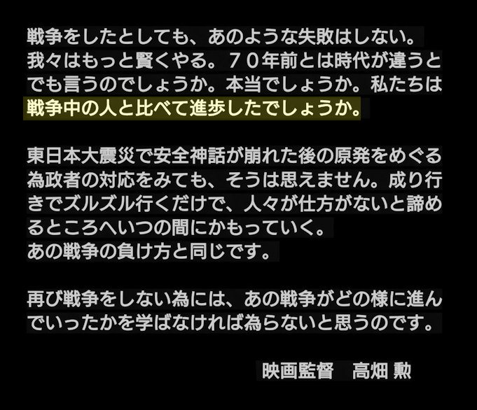

昭和二十年五月東京大空襲で被災しました。
当時父は入院中、母は前年他界して、使用人は召集や徴用を受け、自宅には私と女学生の妹と中学一年の弟だけで、日夜空襲に備えてリュックや、防災頭巾を手元に置いていました。 三月の空襲では西空が広範囲に真赤になって、大変な被害を受けている様子が想像できました。四月の空襲では我家の五、六軒先で焼け止まり、助かりました。
東京上空をB二九が、低空で轟音と共に、雲霞(うんか)の様な大群で、機体は夜なのに周囲が明るくなって、真上の飛来を手にとる様にみえました。 堂々の姿にしばし見とれる一瞬、照明弾や焼夷弾が雨の様に落下しました。
二十五日は天神様の祭礼。前夜に炊いた最後の赤飯を、逃げる時に思い出し、家に戻っておひつを抱え、真赤にみえるガラス戸を見て危険と思ったが、妹が持って逃げる途中の布団に火が付き、おひつは熱風でバラバラ、真鍮の"たが"だけが残りました。
翌朝太陽が出て晴れましたが、焼跡はもやが、かかった様で、破裂した水道管からの水で、煙で痛んだ目を洗いましたが白目が真っ赤で、「助かって良かった」とか恐ろしさの感情はない、放心状態でもない、消火訓練や防火用水など役に立つ状況ではありませんでした。
ある夜校庭で竹槍訓練を、一家に一人集められて行った時、頭によぎったものは、米軍機一機に日本戦闘機が勇敢に近ずいて、戦闘を幾度か繰り返していましたが、大木と蝉の様な対象に、心が痛みました。 援軍は無く米機は悠々と東から西へ、飛んでいました。
物量に優れた連合軍に何で竹槍訓練をと思いました。
日独伊協定の二国は、五月に降伏しました。 前線基地である島島の玉砕を知り、敗戦は目に見えている。日本も今終戦にしたら、多くの被害が食い止められると思いましたが、誰のためか何の為か、本土決戦国民総火の玉など、士気の鼓舞で声高しでありました。
終戦放送を疎開先で聞く人々も、田園風景も妙に静かでした。私は燈火管制や警報の無い日が続くと思うと、終わったことが何よりも嬉しくて、十二月になって東京に帰ってからの生活は、インフレで大変でしたが、新宿に闇市が出来て、人々の活気が出てきました。
ラジオは離れ離れになった人々の人捜し、そして国中が貧困の中で、外国への莫大な国家賠償を、課せられる報道があって敗戦とは、こう云うものだったのか、多難な日本の今後が待ち受けていました。 国破れて山河あり
平和の有難い事は身を以て知っていますが、歴史は繰り返しています、どうして戦争になったのか、これは外交上言えない事もあるかも知れないが、諸説有る中冷静に真の原因を究明する事も大切です。
平和維持は、戦争はどうして起きるのか、起きない様にするにはどうするのか、国と国の利害対立は世の常として難しいと思いますが、人類永遠のテーマとして、語り続け合えたらと思います。
昭和20年2月ごろから B29 による空襲は回数を増し 、5月24・25日 、B29 延べ約1000 機 (警視庁 報告 約 500 機) による大空襲は 、3区に焼失戸数3万3000戸の被害をもたらしました。
その後 、5月29日に牛込区河田町富久町などで939戸が焼失したのが区内での空襲による被害の最後となりました。
東京に対する B29 の大編隊による空襲は 、ほぼこれをもって終了し、以後終戦の日まで他の大都市や中小都市に対する空襲が続きました。
それに 先立ち19年3月、東京都は「一般疎開促進 要綱」を決定。同年4月から、主に学童の疎開を進めるために「京浜地域 疎開輸送 強化方策」を施行しました。
(新宿区 平和都市宣言 5周年記念誌 から引用)
アニメ監督 高畑勲が 私たちに投げかけた警告